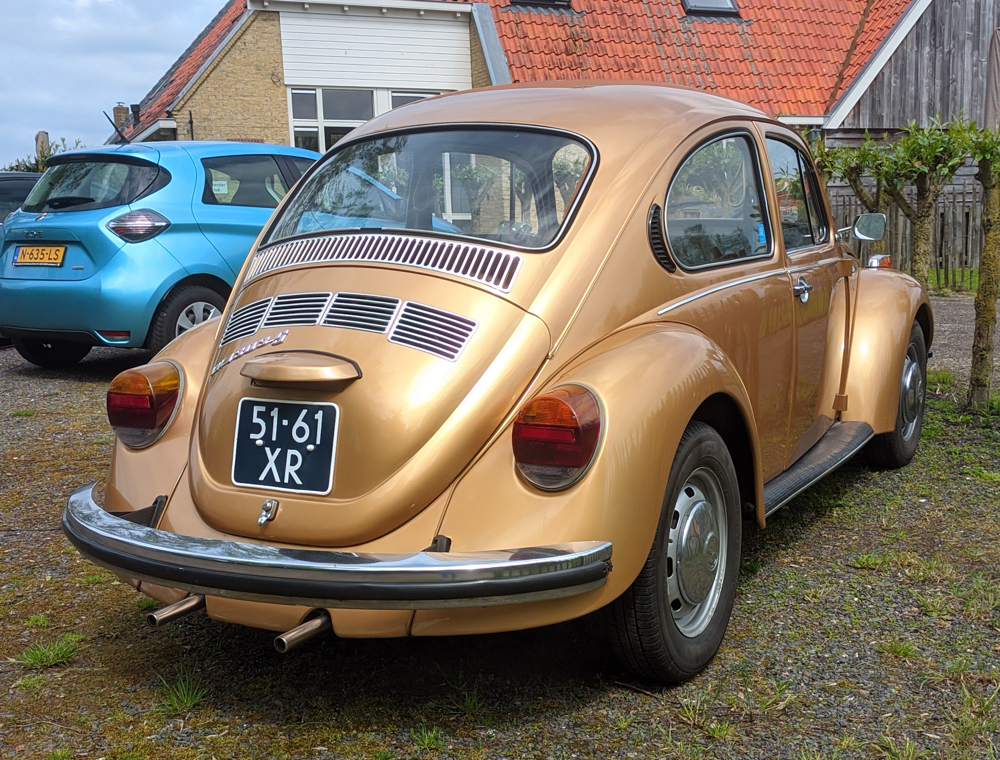
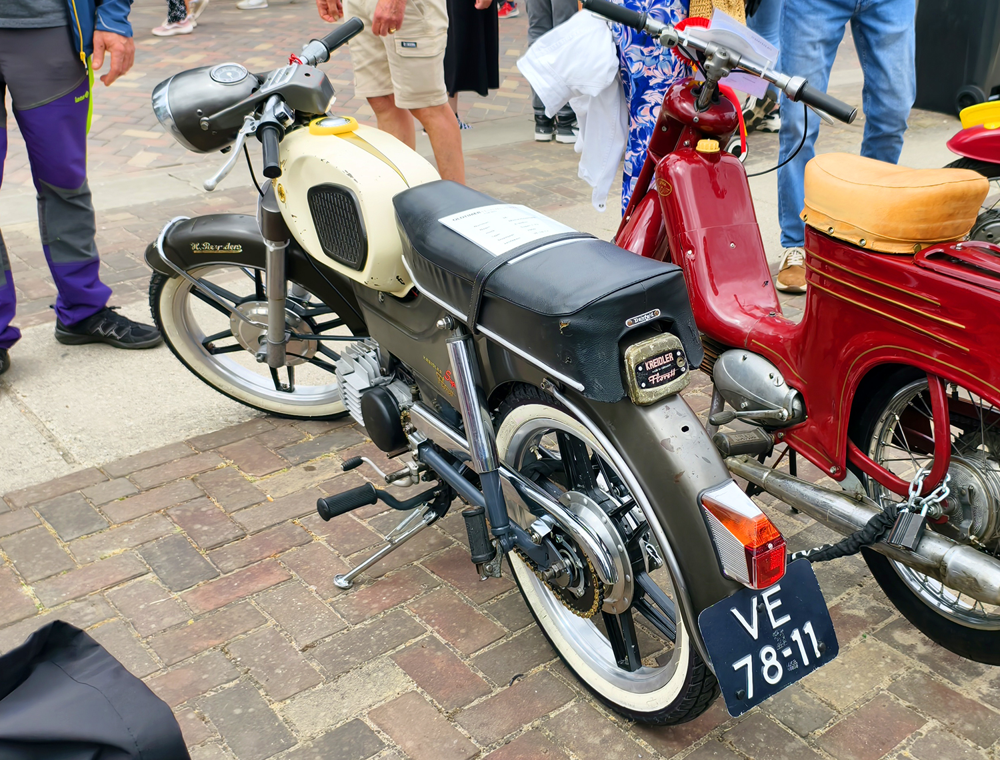
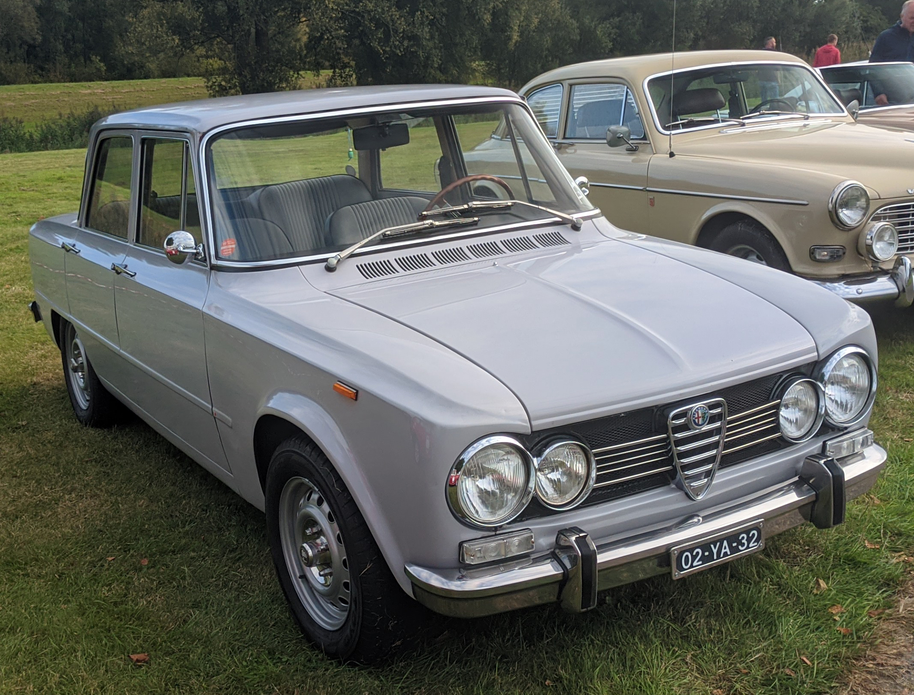

License Plates of
The Netherlands (NL)
Photographed in The Netherlands


Sidecode 2. Commercial Vehicle Oldtimer Series. White on dark blue = Oldtimers (Cars over 40 years old). B = Commercial Vehicles.

Sidecode 1. Oldtimer Series. White on dark blue = Oldtimers (Cars over 40 years old). No Coding.

Sidecode 1. Oldtimer Series. White on dark blue = Oldtimers (Cars over 40 years old). No Coding.

Sidecode 2. Oldtimer Series. White on dark blue = Oldtimers (Cars over 40 years old). No Coding.

Sidecode 2. Oldtimer Series. White on dark blue = Oldtimers (Cars over 40 years old). No Coding. US-Sized plate.


Sidecode 3. Oldtimer Series. White on blue = Oldtimers (Cars over 40 years old). No Coding.


Sidecode 3. Oldtimer Series. White on dark blue = Oldtimers (Cars over 40 years old). No Coding.


Sidecode 2. Oldtimer Series. White on dark blue = Oldtimers (Cars over 40 years old).

Sidecode 6. Oldtimer Trailer Series. White on dark blue = Oldtimers (Cars over 40 years old). W = Trailer over 750kg.

Sidecode 1. Oldtimer Trailer Series. White on dark blue = Oldtimers (Cars over 40 years old). W = Trailer over 750kg.

Sidecode 2. Oldtimer Semi-Trailer Series. White on dark blue = Oldtimers (Cars over 40 years old). O = Oplegger (Semi-trailer).

Sidecode 1. Oldtimer Motorcycle Series. White on dark blue = Oldtimers (Cars over 40 years old). E = Motorcycle.

Sidecode 1. Oldtimer Motorcycle Series. White on dark blue = Oldtimers (Cars over 40 years old). The second U = Motorcycle. The oval sticker is an unofficial addition.

Sidecode 1. Oldtimer Motorcycle Series. White on dark blue = Oldtimers (Cars over 40 years old). Z = Motorcycle.

Sidecode 1. Oldtimer Motorcycle Series. White on dark blue = Oldtimers (Cars over 40 years old). H = Motorcycle.


Sidecode 1. Oldtimer Motorcycle Series. U = Motorcycle. Reissued on new plate style.


Sidecode 3. Imported Youngtimer Series. Reissued on new plate style.

Sidecode 3. Imported Youngtimer Series. White on dark blue = Oldtimers (Cars over 40 years old). Some letter combinations are reserved for imported vehicles. Unofficialy remade in the size of old Italian plates.